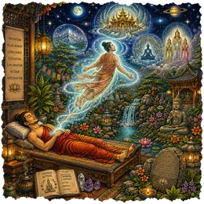
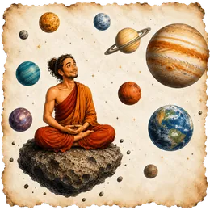

En resumen
El viaje astral es la experiencia de sentir que la conciencia sale del cuerpo físico y se desplaza fuera de él. A menudo, quien lo vive ve su propio cuerpo desde arriba. También se llama proyección astral o desdoblamiento astral. Las tradiciones esotéricas lo atribuyen a un «cuerpo astral»; la ciencia lo estudia como experiencia extracorporal.
¿Qué es el viaje astral?
El viaje astral es la impresión de salir del propio cuerpo y de moverse fuera de él, con plena conciencia. Quienes lo describen hablan de flotar cerca del techo, de ver su cuerpo acostado en la cama o de recorrer lugares conocidos. La experiencia suele llegar en el umbral del sueño, en una relajación muy profunda o, a veces, sin buscarla.
Las palabras cambian según la tradición. Proyección astral viene del vocabulario esotérico inglés. Desdoblamiento astral, muy usado en español, insiste en la idea de un doble que se separa. También se habla de desdoblamiento espiritual o de desprendimiento astral. Experiencia extracorporal, o experiencia fuera del cuerpo, es el término neutro de los investigadores.
Esta página no te pide creer en nada. Te cuenta lo que dicen las tradiciones y la ciencia, y cómo explorar la experiencia con prudencia.
Desdoblamiento astral: qué es el cuerpo astral y el plano astral
La palabra «astral» viene del latín astralis, «de los astros». En la Antigüedad, algunos filósofos neoplatónicos hablaban de un vehículo sutil del alma, ligado a los astros. La idea atravesó los siglos hasta llegar al esoterismo moderno.
A finales del siglo XIX, la teosofía de Helena Blavatsky difundió la expresión «cuerpo astral». Según esta corriente, el ser humano tendría varios cuerpos sutiles, y el cuerpo astral sería el que viaja durante el sueño o el desdoblamiento. El plano astral, o mundo astral, sería el lugar donde se mueve: un nivel de realidad hecho de emociones e imágenes.
En el siglo XX, el estadounidense Robert Monroe popularizó estas experiencias con su libro «Journeys Out of the Body», publicado en 1971. Describió con detalle sus salidas del cuerpo, las vibraciones que las precedían y su manera de volver. Técnicas como la de rodar fuera del cuerpo se inspiran en sus relatos.
¿El viaje astral es real? La experiencia extracorporal según la ciencia
La ciencia no se pronuncia sobre la existencia de un cuerpo astral. Lo que sí estudia es la experiencia extracorporal: la sensación, muy real para quien la vive, de percibir el mundo desde fuera del propio cuerpo. Muchas personas cuentan haberla vivido al menos una vez, a menudo de forma espontánea.
En 2002, un equipo dirigido por Olaf Blanke publicó en la revista Nature un caso muy citado. Durante un examen cerebral, los investigadores estimularon con electricidad el giro angular derecho de una mujer. Ella sintió entonces que flotaba y que se veía desde arriba. El estudio muestra que el cerebro puede producir esa vivencia.
Eso no prueba que la conciencia salga del cuerpo, ni lo contrario. Las pruebas que se han intentado, como leer un número escondido en lo alto de una habitación, no han dado resultados concluyentes. Lo honesto es decir que la experiencia existe y que su interpretación sigue abierta.
¿Qué se siente en un viaje astral?
Los relatos de quienes practican se parecen mucho entre sí, de una tradición a otra. No todo el mundo vive todas estas sensaciones, y ninguna es obligatoria. Estas son las más descritas:
- Vibraciones o un zumbido que recorre el cuerpo, a veces con un sonido interior intenso.
- Una sensación de ligereza, de flotar o de hundirse suavemente en el colchón.
- La impresión de que el cuerpo está dormido mientras la mente sigue despierta.
- Una breve incapacidad de moverse al despertar, que muchos identifican con la parálisis del sueño.
- La sensación de girar, de deslizarte o de incorporarte sin mover el cuerpo físico.
- Una visión desde fuera: la habitación vista desde el techo, o tu propio cuerpo acostado.
Cómo hacer un viaje astral paso a paso
Estas son las técnicas clásicas que se transmiten en los libros y en los grupos de práctica. Se viven como ejercicios de imaginación y de atención, sin ninguna garantía de resultado. Lo ideal es practicarlas acostado, en un momento tranquilo, por ejemplo al despertar de madrugada.
- Relajación profunda
Acuéstate boca arriba, afloja cada zona del cuerpo y deja que la respiración se haga lenta. Busca que el cuerpo se duerma mientras la mente sigue atenta.
- Observar el umbral
Quédate con las sensaciones que aparecen: pesadez, hormigueo, ligereza, vibraciones. No las persigas ni las rechaces; obsérvalas como un paisaje que cambia.
- La cuerda
Imagina una cuerda que cuelga sobre tu pecho. Sin mover el cuerpo físico, sube por ella mano tras mano, sintiendo el esfuerzo y la tracción.
- Rodar fuera del cuerpo
Imagina que giras despacio sobre ti mismo, como al darte la vuelta en la cama, hasta quedar al lado de tu cuerpo, sin moverlo.
- La caída imaginaria
Siente que te dejas caer hacia atrás, con el pequeño vértigo de cuando te duermes de golpe. Algunos practicantes usan esa sensación como puerta.
- El objetivo
Antes de practicar, elige un lugar o un objeto conocido. Durante la sesión, dirige tu atención hacia él y, después, anota lo que percibiste.
- El regreso
Termina siempre volviendo al cuerpo: siente su peso, mueve los dedos, respira hondo y abre los ojos despacio.
Viaje astral y sueños lúcidos: ¿cuál es la diferencia?
En un sueño lúcido sabes que estás soñando, y el escenario es el del sueño. En un viaje astral, tal como lo describen los practicantes, tienes la impresión de estar despierto, en tu habitación real o en el plano astral. Entre los dos está lo que algunos llaman sueño astral, o desdoblamiento durante el sueño.
Las dos experiencias se parecen y suelen aparecer en los mismos momentos, cerca del sueño REM. Algunos investigadores piensan que muchas salidas del cuerpo son sueños lúcidos muy realistas. Los practicantes, en cambio, insisten en que la sensación es distinta. Encontrarás más detalles en la página sobre los sueños lúcidos.
| Sueño lúcido | Viaje astral, según los practicantes | |
|---|---|---|
| Qué sabes | Que estás soñando | Que estás fuera de tu cuerpo |
| Escenario | El mundo del sueño, a menudo cambiante | Tu habitación o el plano astral |
| Momento habitual | El sueño REM, sobre todo de madrugada | Al dormirte, al despertar o en una relajación profunda |
| Lo que dice la ciencia | Medido en laboratorio desde los años setenta | Estudiado como experiencia extracorporal; su naturaleza sigue en debate |
¿Es malo hacer un viaje astral? Precauciones y regreso
Las técnicas descritas aquí son ejercicios de relajación y de imaginación. Lo que más suele inquietar es lo desconocido: las vibraciones, un ruido interior o la breve parálisis al despertar. Saber que forman parte de la transición hacia el sueño ayuda mucho a vivirlas con calma.
Algunas tradiciones hablan de entidades o de peligros en el plano astral. No hay ninguna prueba de ello, pero el miedo sí es real, y conviene respetarlo. Si algo te incomoda, vuelve al cuerpo: mueve los dedos, respira hondo y abre los ojos.
- Practica descansado, nunca para escapar de un momento difícil.
- Elige un ancla para volver: una palabra, el contacto de las manos, la sensación del colchón.
- No mezcles la práctica con alcohol ni con otras sustancias.
- Anota lo que viviste, para separar lo vivido de lo interpretado.
¿Para qué sirve un viaje astral?
Depende de a quién preguntes. Para las tradiciones esotéricas, el viaje astral permite explorar otros planos y conocerse más allá del cuerpo. Para muchos practicantes actuales, es sobre todo una aventura interior: una forma de vivir la conciencia de otra manera.
Desde el punto de vista de la meditación, la preparación ya tiene interés por sí misma. Aprendes a relajarte en profundidad, a observar el paso hacia el sueño y a sostener una atención muy fina en las sensaciones. Ese entrenamiento queda, aunque nunca sientas que sales del cuerpo.
Si te atraen los viajes interiores más suaves, los mundos inmersivos proponen paisajes completos para explorar con calma. Y el trance chamánico es otra forma tradicional de viaje del espíritu.
Registros akáshicos y vidas pasadas: lo que dicen las tradiciones
Akasha es una palabra sánscrita que significa «éter» o «espacio». En la filosofía india es el más sutil de los cinco elementos. Con la teosofía, entre finales del siglo XIX y principios del XX, nació la idea de una memoria inscrita en ese éter.
Los registros akáshicos, también llamados archivos akáshicos, serían esa memoria: una especie de biblioteca universal que guardaría la historia de cada alma. Para quienes creen en la reencarnación, contendrían también sus vidas pasadas. Algunos practicantes dicen visitarlos en un viaje astral; otros, en una meditación profunda.
La idea de renacer es mucho más antigua: el hinduismo y el budismo hablan de ella desde hace más de dos mil años. Ninguna de estas nociones ha sido confirmada por la ciencia. Si en meditación surge una «vida pasada», vívela como una imagen interior, que nadie puede verificar.
En MeditaDream, «El guardián de los archivos», de 24 minutos, se inspira en los registros akáshicos. Lo exploras como una biblioteca interior, con un guardián que te recibe, en la categoría Conocimientos Superiores & Más Allá. «Vidas pasadas y tiempo», de 18 minutos, en «Trances & Técnicas», se centra en cambio en el linaje familiar. No te pide creer en la reencarnación.
Meditación de viaje astral guiado: cómo se organiza la progresión
Una meditación de viaje astral guiado te acompaña en cada etapa, sin que tengas que recordar las técnicas. En MeditaDream, la pestaña «Astral» de la pantalla «Trance y Viaje Astral» organiza la práctica en tres tiempos, del gesto más pequeño a la exploración.
Primero, los cinco ejercicios de Micro-Desapego, de 16 a 20 minutos, entrenan pequeños gestos de separación. Después vienen las seis técnicas de separación y los cinco ejercicios en el plano astral de la categoría Viaje Astral. Algunas sesiones se abren a medida que practicas, con los puntos que ganas al meditar.
- Paso 1Micro-Desapego
Cinco ejercicios breves para sentir el peso del cuerpo, desplazar su contorno unos centímetros y cambiar el punto desde el que observas.
- El imán del techo17 min
- El pequeño desplazamiento19 min
- El punto detrás de la cabeza16 min
- El tobogán16 min
- Sentarse como un fantasma20 min
- Paso 2Técnicas de separación
Seis protocolos para practicar la salida con la imaginación: flotar hacia el techo, incorporarte, los miembros interiores, la cuerda, la caída imaginaria y el objetivo.
- Paso 3Ejercicios en el Plano Astral
Cinco sesiones para explorar una vez fuera: un objetivo para verificar, un protocolo de encuentro, el desplazamiento, la visión y la visualización del doble.
Tres etapas, del gesto más pequeño a la exploración: avanza a tu ritmo.
El viaje astral en MeditaDream
La pantalla «Trance y Viaje Astral», bajo el antetítulo «Estados No Ordinarios», reúne todo lo necesario para practicar con método. En la pestaña «Astral» encontrarás las tres secciones del recorrido: «Micro-Desapego», «Técnicas de separación» y «Ejercicios en el Plano Astral».
Puedes empezar con «El imán del techo», de 17 minutos, y llegar más adelante a «Astral · Flotar hacia el techo», de 33 minutos. La sesión más larga, «Astral · La Caída Imaginaria», dura 41 minutos. Todas son de nivel avanzado: tómate el tiempo de pasar por cada etapa.
Las categorías

Viaje Astral11 sesiones · 16 a 41 min · avanzado Micro-Desapego5 sesiones · 16 a 20 min · avanzado
Micro-Desapego5 sesiones · 16 a 20 min · avanzado
Cósmico & Vacío2 sesiones · 28 a 31 min · avanzado
Sesiones para empezar
- El imán del techo17 min · avanzado · Micro-DesapegoSentir el peso del cuerpo y una ligera atracción hacia el techo.
- Astral · Flotar hacia el techo33 min · avanzado · Viaje AstralSentir cómo se borra la presión del apoyo hasta tener la impresión de flotar.
- Astral · La Cuerda29 min · avanzado · Viaje AstralEscala una cuerda vertical imaginaria para liberarte del cuerpo físico
- Astral · Objetivo para verificar19 min · avanzado · Viaje AstralAnotar lo que se percibe de un objetivo antes de comprobarlo, sin corregir nada después.
- Expansión del cuerpo de luz31 min · avanzado · Cósmico & VacíoPartir del calor del cuerpo y dejar que se vuelva una luz que va más allá de la piel.
Las herramientas de la app
- Trance y Viaje Astral
Una pantalla con dos pestañas, «Trances» y «Astral», para recorrer los estados no ordinarios en orden, del ejercicio más breve al protocolo completo.
- Micro-Desapego
Cinco ejercicios de 16 a 20 minutos para entrenar pequeños gestos de separación antes de intentar un viaje completo.
- Experiencias Espirituales
Un cuaderno del «Diario» para anotar lo que sentiste: vibraciones, imágenes, la impresión de flotar. Todo se queda en tu teléfono.
- El Oráculo
Toca la propuesta «Viaje astral» y recibe tres cartas, cada una con una meditación adecuada para ese momento.
Mundos inmersivos relacionados
 El Templo Cósmico
El Templo Cósmico Viaje a Través de la Galaxia
Viaje a Través de la Galaxia La Dimensión de los Espejos
La Dimensión de los EspejosPreguntas frecuentes
¿Qué es el viaje astral?
El viaje astral es la experiencia de sentir que la conciencia sale del cuerpo y se mueve fuera de él. También se llama proyección astral o desdoblamiento astral. Las tradiciones esotéricas lo atribuyen a un cuerpo astral que viaja por el plano astral; la ciencia lo estudia como experiencia extracorporal.
¿Cómo hacer un viaje astral paso a paso?
Acuéstate en un lugar tranquilo y relaja el cuerpo por zonas, hasta que se adormezca mientras la mente sigue despierta. Observa las sensaciones que aparecen, como la ligereza o las vibraciones. Luego prueba una técnica: subir por una cuerda imaginaria, rodar fuera del cuerpo o dejarte caer interiormente. Termina siempre volviendo al cuerpo con calma. Ninguna técnica garantiza el resultado.
¿El viaje astral es real?
La experiencia es real para quien la vive, y la ciencia la estudia con el nombre de experiencia extracorporal. En 2002, el equipo de Olaf Blanke mostró que estimular una zona del cerebro puede provocar la sensación de flotar y de verse desde fuera. Eso no prueba ni descarta que algo salga del cuerpo. La interpretación depende de tus creencias, y ninguna es obligatoria.
¿Es malo hacer viajes astrales?
No hay pruebas de que sea peligroso en sí mismo: las técnicas son ejercicios de relajación e imaginación. Lo que más inquieta son las sensaciones de transición, como las vibraciones o la parálisis del sueño, que pueden asustar si no las conoces. Practica descansado, con un ancla para volver, y detente cuando quieras. Si te pesa o vuelve a menudo, pide consejo a un profesional.
¿Qué se siente en un viaje astral?
Quienes lo describen hablan de vibraciones, de un zumbido interior, de una gran ligereza o de la impresión de flotar. Algunos sienten que el cuerpo se duerme mientras la mente sigue despierta, o viven una breve parálisis al despertar. Después llega, a veces, la sensación de separarse y de ver la habitación desde otro punto.
¿Cuál es la diferencia entre viaje astral y sueño lúcido?
En un sueño lúcido sabes que estás soñando y te mueves en el escenario del sueño. En un viaje astral, según los practicantes, sientes que estás despierto y fuera de tu cuerpo, en tu habitación o en el plano astral. Las dos experiencias aparecen cerca del sueño REM y se parecen mucho. Algunos investigadores creen que muchas salidas del cuerpo son sueños lúcidos muy realistas.
¿Qué es el plano astral?
En la teosofía y el esoterismo moderno, el plano astral es un nivel de realidad sutil, hecho de emociones e imágenes. Allí se movería el cuerpo astral durante el sueño o el desdoblamiento. Los practicantes lo describen como un mundo cambiante, sensible al pensamiento. Es una noción espiritual, que la ciencia no ha confirmado.
¿Para qué sirve un viaje astral?
Para las tradiciones esotéricas, sirve para explorar otros planos y conocerse más allá del cuerpo. Para muchos practicantes, es una aventura interior. Desde la meditación, su preparación ya aporta algo: aprendes a relajarte en profundidad y a observar con atención el paso hacia el sueño.
¿Qué son los registros akáshicos y para qué sirven?
Según la teosofía y otras corrientes espirituales, los registros akáshicos son una memoria universal, inscrita en el akasha, el «éter» de la filosofía india. Guardarían la historia de cada alma, incluidas sus vidas pasadas. Quienes los consultan buscan comprender su camino o el origen de lo que viven. Hoy hay quien ofrece lecturas de registros akáshicos, pero nada permite comprobarlas. En meditación, puedes explorarlos como una biblioteca interior simbólica.
¿Se puede tener un viaje astral involuntario?
Sí. Muchas personas cuentan que lo vivieron sin buscarlo: al dormirse, al despertar o en una relajación muy profunda. Los investigadores hablan entonces de experiencia extracorporal espontánea. Suele durar poco y termina al moverse o al despertar del todo. No hay pruebas de que sea peligrosa, aunque puede asustar la primera vez. Si te pesa o vuelve a menudo, pide consejo a un profesional.
¿Qué es el sueño astral?
Sueño astral es el nombre que algunos practicantes dan a un viaje astral que empieza dentro de un sueño. También se habla de desdoblamiento durante el sueño. La persona siente que sale del cuerpo mientras duerme, a menudo de madrugada. Se parece mucho a un sueño lúcido muy realista, y algunos investigadores lo interpretan así. Para los practicantes, la sensación de estar fuera del cuerpo marca la diferencia.
El viaje astral en el blog
Relatos, técnicas y preguntas frecuentes sobre el desdoblamiento, para seguir explorando a tu ritmo.
Próximamente
- Se publica el 7 de diciembre de 2026Estados de conciencia: de la ensoñación al trance meditativo
- Se publica el 11 de enero de 2027Cómo hacer un viaje astral, paso a paso
Practica gratis
Todas estas sesiones están en la app MeditaDream: gratis, sin suscripción, sin anuncios ni cuenta, y funciona sin conexión.
✦ Descubre la app